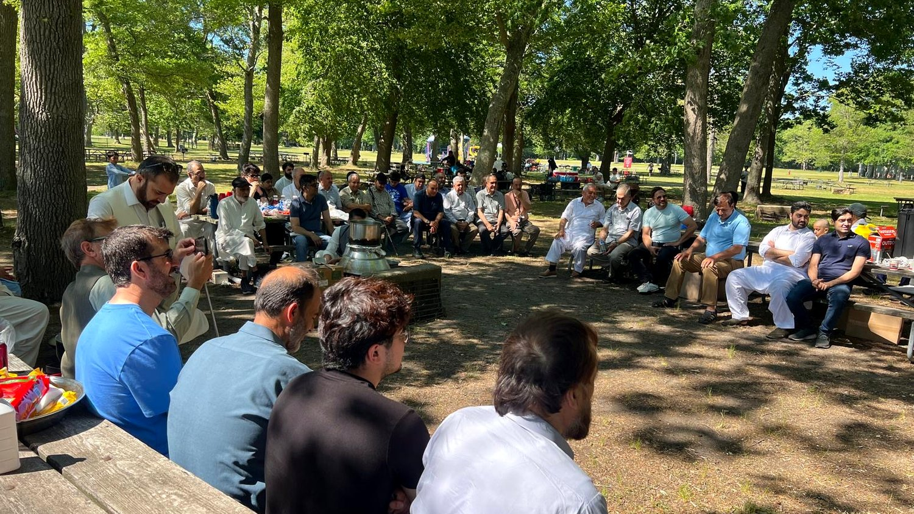

About Us
A family of Pashtuns who found one another on Long Island — and built a home for our culture and our community here.
How PSOLI began
The Pashtuns Society of Long Island began the way most good things do — with a few families who missed home, and decided to build a piece of it here. We come from different cities and valleys, but we share one language, one table, and one idea of what it means to be a good neighbor.
What started as backyard picnics and Eid gatherings grew into a registered nonprofit with a cabinet and board of directors, a welcome banner, and a simple goal: bring people together, look after one another, and make sure our children grow up knowing where they come from. Our founding gathering was even covered by Pakistan News.

What we stand for.
Unity
One community that shows up for each other — in celebration and in hardship.
Culture
Keeping Pashto, poetry, music, and hospitality alive for the next generation.
Service
Meals, mentoring, and a helping hand for families and new arrivals who need it.
Dignity
Every person is welcomed as an honorable guest — no judgment, no conditions.
The people behind PSOLI.
Cabinet and Board of Directors, Pashtuns Society of Long Island (Regd).


Proudly serving Long Island.
Our families and programs are centered in these communities — and our door is open to neighbors from across the Island.
East Islip
Suffolk County, NY
Bay Shore
Suffolk County, NY
Deer Park
Suffolk County, NY
Be part of the family.
Everyone is welcome. Support our work, or come to our next gathering.